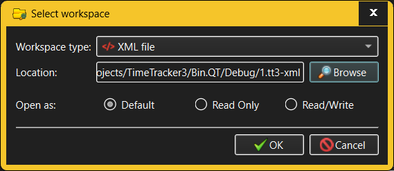

Open Workspace dialog
The Open Workspace dialog is invoked when the user wants to open an already
existing workspace.

The fields in the Open Workspace dialog allow the user to specify:
- Workspace type - TimeTracker3 allows using a variety of
technologies to store workspaces, the simplest one of which is storing the
entire workspace in a single XML file in the local file system (this is the
choice ideal for individual users who need to track their working time).
Other workspace types will be available depending on the installed
TimeTracker3 configuration and may range from local (or remote) databases to
a full-fledged remote storage.
- Workspace location - a workspace is uniquely identified
by its "location", the exact nature of which varies with the workspace type.
For XML file workspaces this will be the full path to the XML file where the
workspace resides. Workspace locations are not directly editable;
instead, the Browse button will pop up the dialog where the
user can choose the location of an existing workspace in a manner
appropriate for the chosen workspace type.
- Open as - TimeTracker allows to explicitly specify how
to open an existing workspace, which can be one of:
- Default - workspace will be open in read/write
mode, allowing both reading and modification. However, if it is not
possible, an attempt will be made to open the workspace in read-only
mode.
- Read Only - workspace will allow only reading from;
any modification of the workspace will not be permitted, This is foot
for e.g. backing up a workspace or generating reports from it.
- Read/Write - workspace will allow modifications as
well as reading. If the workspace actually exists but only allows read
access (for example, when a workspace resides in a read-only file), an
attempt to open it in this mode will fail/
When opening a workspace, TimeTracker3 will check whether the current login
credentials (as previously entered in the Login dialog) grant access to that
workspace. If not, the user will be given a choice whether to re-login with
different credentials, that do grant access to the workspace in
question, or to abandon the workspace opening and remain working with the
currently open workspace (if there is such).
When switching between workspaces, the previous workspace is cleanly closed
before switching to the new one. Specifically, if any Activity is in the process
of being recorded, its recording will stop (and the corresponding Work unit will
be logged) before the previous workspace is closed.
See also: -